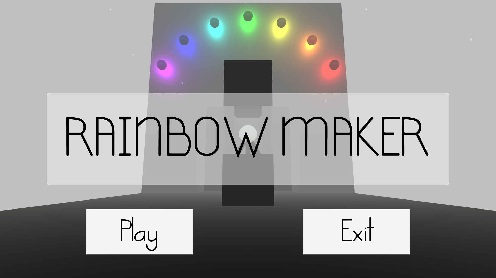
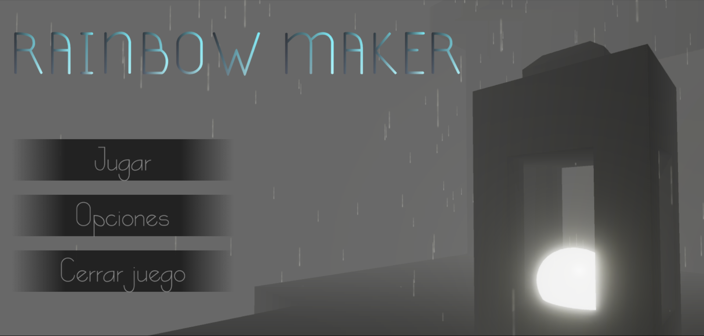

Proyecto
Proyecto 3D propuesto para finalizar el curso. Esta vez, el proyecto era 3D y los requisitos eran crear un entorno 3D que fuese un laberinto en el cual el jugador (en primera persona) debiese encontrar 6 objetos dentro de un tiempo límite para poder salir de él.

Descripción y contexto
Desde un principio, no me convenció la idea de desarrollar un simple laberinto, ya que normalmente, en los videojuegos los laberintos no suelen ser divertidos,
más aún si tenemos en cuenta que el control debía ser en primera persona. Por ello, durante un tiempo estuve recopilando ideas para que el
laberinto fuese lo menos frustrante posible.
La primera idea fue diferenciar los pasillos por colores y utilizar como objeto a recolectar esferas del mismo color de los pasillos, de ésta manera, el
jugador sabría cuales había recogido ya por qué zonas ya estaban completadas. Aun así, sería bastante fácil perderse, ya
que los muros impedirían al jugador saber si la zona de la esfera recolectada tenía en alguno de sus extremos una salida a otra zona sin completar.
Mientras decidía una solución para frustrar lo menos posible al jugador, fui diseñando en papel distintos layouts para el laberinto.
Durante este proceso, al ver todas las opciones que había planteado juntas, se me ocurrió que en lugar de tener un laberinto estático,
diseñaría varios módulos para el laberinto y se posicionarían de manera aleatoria por la escena variando también su rotación.
Para ello tenía que tener en cuenta que los módulos debían tener las mismas dimensiones y ofrecer, en caso de que las tuviesen, salidas en los
mismos puntos.
A cada módulo, se le añadieron varios puntos en los que podrían generarse sus respectivas esferas (sólo una por módulo).
- Zonas blancas: suelo.
- Zonas negras: vacío.
- Puntos: posibles posiciones para las esferas a recolectar.
Se crearon dos plataformas fijas en la escena, una sería la zona donde el jugador comienza y la salida.
Adicionalmente y para contribuir a que el jugador se pierda lo menos posible dentro de lo que cabe, el suelo de la zona incial, se fué alternando de color (blanco
y negro).
Para que el jugador reconociese nada más comenzar la partida el objetivo del juego, se colocó una esfera justo en frente de la zona de inicio; de esta
manera, ya eran 7 las esferas a recolectar; ésto unido a la idea anterior de tintar el laberinto de colores, dió origen al título del juego.
El objetivo sería recolectar 7 esferas, cada una con uno de los colores del arcoiris, para finalmente poder escapar del laberinto.
Volviendo al principio del diseño: Si el problema son los muros, ¿por qué no hacer un laberinto sin ellos?
Para evitar que el jugador viese el camino hacia los objetos desde cualquier punto del laberinto, decidí añadir niebla, que iría disminuyendo
poco a poco conforme se recolectaban esferas.
Si el jugador caía, se le transportaría de nuevo a la última zona segura en la que estuvo.
Tras desarrollar la idea por completo, se añadió una última esfera que haría las veces de interruptor para abrir la puerta y poder escapar del laberinto. Se implementó el temporizador y una penalización a éste cuando el jugador caía al vacío. Para redondear un poco más la atmósfera del juego, se añadieron partículas para simular lluvia, música de fondo, efectos de sonido, luces, etc...
"Remake"
Tras un tiempo, decidí que el proyecto, a pesar de no ser nada del otro mundo jugablemente, tenía margen de mejora en el aspecto gráfico y tras la salida de los nuevos paquetes 'Input System' y 'Localization' para Unity, decidí rehacerlo haciendo uso de las nuevas herramientas.

Con el nuevo Input System, implementé soporte para teclado+rató y cualquier mando de consola.
De manera adicional, según el ultimo tipo de control que se utilice, la interfaz de los menús cambia para reflejar los nuevos controles.
Con Localization, se tradujeron todos los textos del juego.
Se realizaron shaders para diferentes objetos con Shader Graph.
Haciendo uso de los Mixers de audio, se diferenciaron 3 canales: general, música y efectos de sonido.
El escenario fijo y los módulos del laberinto fueron recreados usando ProBuilder+ProGrids.